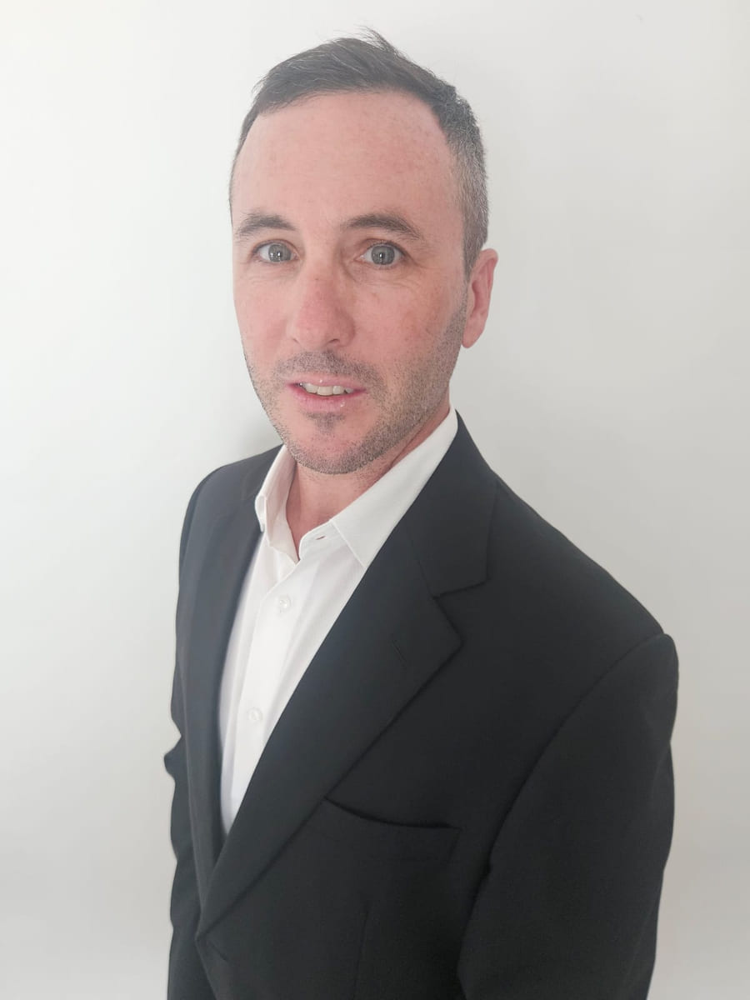

DAOasis brings together experience across strategy, operations, technology,
digital ownership, hospitality and community to build a different kind of
wellness ecosystem.
DAOasis sits at the intersection of wellness, technology, digital ownership
and real-world hospitality.
Building it requires more than one discipline. It requires people who
understand strategy, operations, technology, Web3, hospitality and the human
experience — and who can bring those disciplines together around
one coherent system rather than six parallel projects.
01
Strategy
Where the company is going, how it is funded, and which decisions are worth making now rather than later.
Jamie · Dan
02
Operations
Turning a broad vision into a sequence that can actually be executed by a small team.
Nelson
03
Technology
The Companion App, the platform beneath it, and the architecture that has to scale after it works.
CTO (TBC)
04
Digital ownership
DRC, $DVT and the on-chain layer — designed so that a member never has to understand it to begin.
Nelson · Etiosa
05
Hospitality
The Sanctuary, and everything that has to be true for a digital Journey to arrive somewhere real.
George
06
Community
The people who participate, contribute and eventually help shape what DAOasis becomes.
Across the team
Founder
JPortrait to follow
Jamie
Founder & CEO
Jamie blends experience across banking, consultancy and
startup ecosystems. He leads on vision, investor relations, experience design and
team culture.
"DAOasis is about helping people reset, reconnect and reimagine their
future — and rewarding them for every step they take."
The founding team
Built fromcomplementaryperspectives.
No single discipline can build DAOasis.
The founding team combines company strategy, operations and token
strategy to build the ecosystem from different sides of the same idea — and to
argue about it properly before anything gets shipped.
NPortrait to follow
Nelson
Co-Founder, COO & Token Strategy
Nelson oversees operations, tokenomics and feasibility
execution. His crypto-native background helps architect DAOasis as a scalable,
community-powered venture.
"Our tokens aren't about speculation. DRC rewards your participation.
$DVT gives you deeper ownership."
D

Portrait to follow
Dan
Co-Founder, Company Strategy
Dan supports founder decisions, financial planning and long
term strategy. Background in scaling ventures, advising founders and structuring
capital.
"Wellness and Web3 both thrive on one thing — community. DAOasis brings them
together in a way that feels natural and lasting."
Technology
The infrastructureunderneath theexperience.
The DAOasis experience should feel simple to the person using it. Someone
opens the app, goes for a walk, and their Journey moves.
Behind that simplicity is technology designed to support the Companion App,
digital ownership, smart contracts and the infrastructure required to grow the
ecosystem responsibly. Uchenna builds the Companion App and
Etiosa works on the on-chain layer beneath it. Technical direction sits with a
Chief Technology Officer — an open role, and a planned senior appointment.
Open role
We’re looking for you
Chief Technology Officer
This seat is open, and filling it is the priority of the
current funding stage. We are looking for an engineer who wants to own the
architecture of a wellness ecosystem from before launch — the app, the
data, and the on-chain layer underneath them — rather than inherit
someone else’s.
If you are reading this and recognising
yourself, we would like to hear from you.
UPortrait to follow
Uchenna
App Developer
Uchenna works across the development of the DAOasis Companion
App, helping turn the product vision into a scalable, intuitive experience for
members.
"A great mobile app doesn’t prove how much code you can write. It proves
how much complexity you can hide from the person using it."
EPortrait to follow
Etiosa
Smart Contract Development
Etiosa works across smart contract deployment, tokenomics design
and the broader technical vision of the on-chain architecture.
"Smart contracts are about trust — my goal is clean, secure code that supports
both the vision and the users behind it."
The real world
Because a Journeyshould be able tobecome physical.
The Companion App creates the daily practice. The digital layer creates deeper
participation. The Sanctuary is the optional physical expression of that — somewhere
a member can go if they want to, not somewhere every member is expected to arrive.
That last step is a hospitality problem, not a software one — and it needs
someone who has run real buildings full of real guests.
George
Hospitality
George brings two decades of international hospitality
leadership, including GM roles at multiple 5-star properties. He leads sanctuary
feasibility and the long term hospitality vision.
"DAOasis is a chance to reinvent hospitality — moving beyond service into
transformation."
Open now. The DAO and its governance arrive in stages.
The Sanctuary · Phuket · Planned for 2027
One team
Six remits.One ecosystem.
The team is not organised around job titles. It is organised around the parts
of the system that have to work — and each part has someone whose name is on it.
Vision
Jamie
Strategy
Dan
Operations
Nelson
Technology
CTO (TBC)
Digital ownership
Nelson + Etiosa
Hospitality
George
DAOasis
One connected system
Companion App
The core operating environment, and the scalable foundation beneath everything else.
Digital ownership
DRC recognises participation. DRC converts to $DVT.
Sanctuary
The optional physical expression. Planned for Phuket in 2027.
Our principles
Build withintention.
01
Clarity over noise
If something needs a paragraph of explanation to justify its existence, it is usually the wrong thing. We would rather ship less and have it understood.
02
Structure creates freedom
Routine is not the opposite of spontaneity. It is what makes room for it. The same is true of a company.
03
Long term thinking over short term speculation
We would rather earn the right to introduce something than rush it to market. That principle governs the product and the token equally.
04
Technology should serve people
Nobody should need to understand a wallet to go for a walk. The infrastructure is our problem, not the member's.
05
Participation should mean something
Recognition is only worth having if it is earned. That is why DRC is tied to genuine participation rather than handed out to acquire attention.
06
The real world still matters
A wellness ecosystem that never leaves the screen has misunderstood the assignment. A Journey has to be able to arrive somewhere.
How we are building
DAOasis is beingbuilt one layerat a time.
The vision is broad. The execution is deliberate. DAOasis has moved beyond
concept development: DAOasis Global Ltd is incorporated in the UK, the Experience
Map — the full product specification — is written, and MVP design handoff is
underway.
DAOasis begins with the Companion App — daily habits, learning, quests and
community. Steps, sleep, hydration, breathing and learning are not six separate
scores; they all move one Journey, and they compound. Bangkok to Phuket is the
launch Journey; completing one opens the next. Participation is recognised through
DAOasis Reward Credits. Those credits create a pathway toward $DVT and deeper
participation across the ecosystem. And the long term vision extends into
real-world Sanctuary experiences and a community that can help shape what comes
next.
01
Companion App
Daily practice
Habits, quests, learning and community. Free to join, no wallet required. Core architecture is built; end-to-end flows are in development.
↓
02
Digital ownership
DRC → $DVT
Participation earns DAOasis Reward Credits. DRC converts to $DVT, the on-chain layer. $DVT follows completion of its legal and structural review.
↓
03
Sanctuary
Real-world experience
The optional physical expression of the ecosystem, planned as a pilot in Phuket in 2027. No property is contracted and no bookings are open.
We're not buildinganother app.
We're building a system around the way people actually want to live — where the
small things done consistently add up to something, and where that something
eventually belongs to the person who earned it.
Remote, flexible to start · Equity from day one,
salary once the Build raise closes · Reporting to the founders
DAOasis is a wellness ecosystem: a Companion App where daily habits become a
journey, a reward layer that recognises participation, and — from 2027 — a
physical sanctuary in Phuket. The UK company is live. The app is in build. Nothing
has launched yet.
That is the offer. You would be shaping the architecture before
it hardens, not maintaining someone else’s decisions after the fact.
What you would own
The technical architecture end to end — mobile app, backend, data model
and the on-chain layer, and how honestly they fit together.
Health data handling. It is the most sensitive thing we touch and the
published position is deliberately conservative; you would be the person who
keeps it that way.
Leading the two engineers already in post — Uchenna on the Companion App,
Etiosa on smart contracts — and hiring the next ones.
Getting the MVP finished and in people’s hands, which is the gate the
next funding stage depends on.
Working with counsel on the $DVT technical position. That review is
unfinished and its outcome shapes what gets built.
Who this suits
You have shipped and run a real mobile product, not only prototypes.
You are comfortable being the most senior technical person in the room and
saying no when the honest answer is no.
You can read a regulatory constraint as a design input rather than an
obstacle.
Web3 experience is useful. Being sceptical about it is more useful.
Pre-revenue does not frighten you, and equity is something you want rather
than something you tolerate.
Being straight with you
There are no users, no revenue and nothing validated in market. There is no
salary until the Build raise closes, and that raise is gated on work you would be
doing. The British Virgin Islands and Thai companies are planned, not formed.
We would rather you knew all of that now than found it out in week three.
How to apply
No form, no tracking, no portal. Write to Jamie directly — a few
paragraphs about what you have built and why this one interests you is plenty.